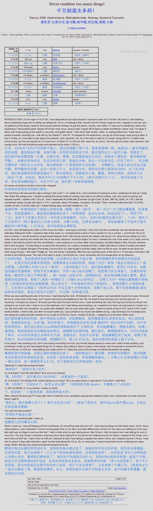

鼠尾草～🌿
@SalviaSWC
往期回顾：

鼠尾草～🌿
@SalviaSWC
药物报告day48——多药联用的灾难性体验......
此人一次性联用了谵妄剂、解离剂、兴奋剂、抑制剂、大麻，结果药效非常痛苦......
所以嘛，大家补药一次性联用多种药物哦🥹 https://t.co/vau4NVSypB
鼠尾草～🌿
@SalviaSWC
药物报告day49——迷幻剂过量的后遗症
迷幻剂服用过量后，作者初始感觉很新快，但逐渐陷入失控的状态。而且，之后还遭受了后遗症的困扰🥺
（话说有推u经历过此类事情嘛，好奇） https://t.co/N14soUQoum